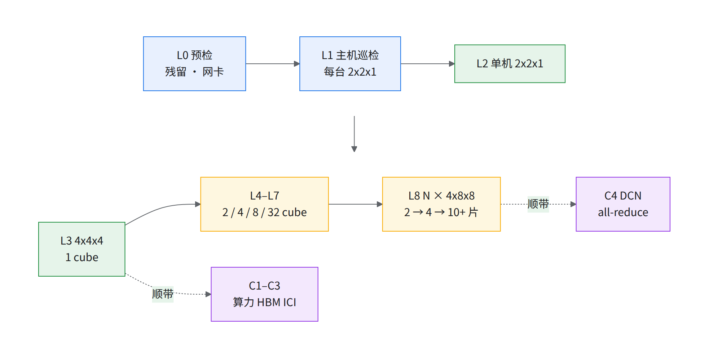
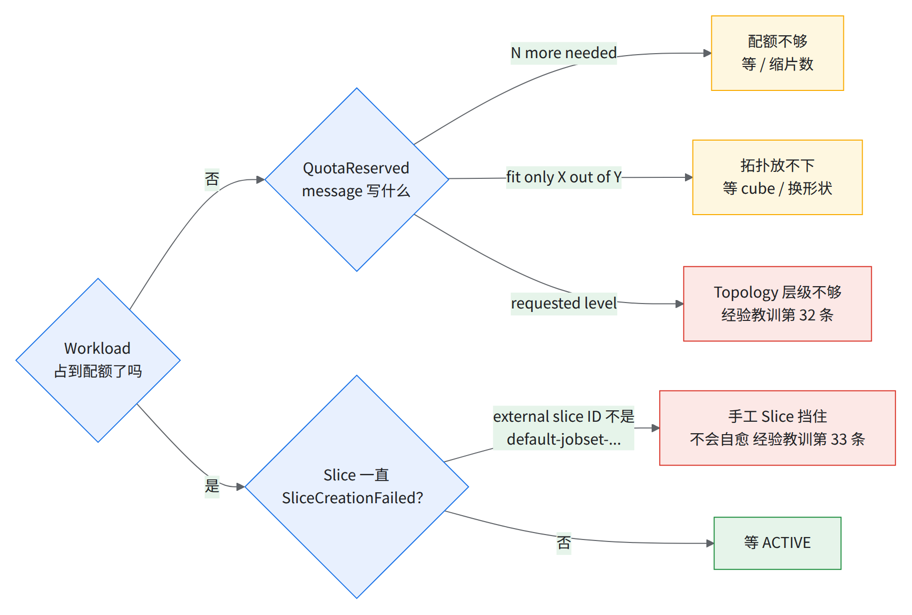
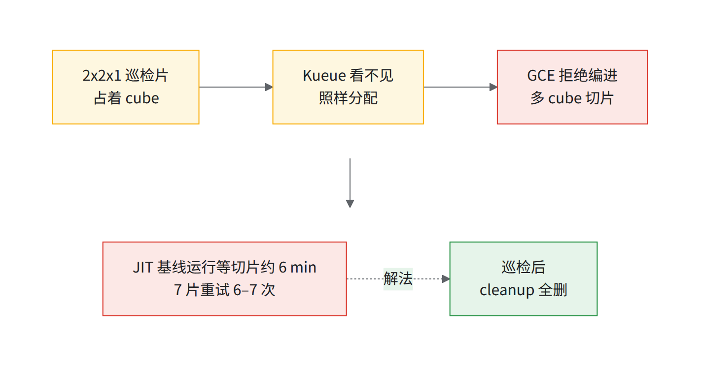
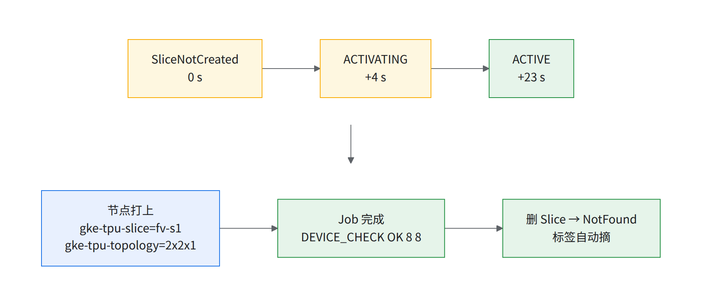
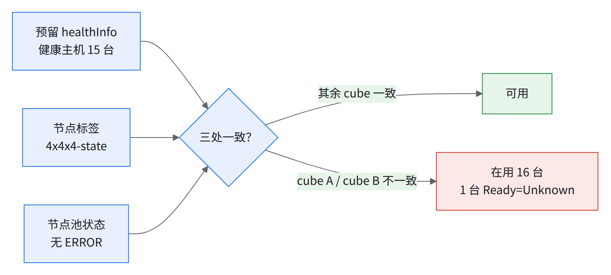
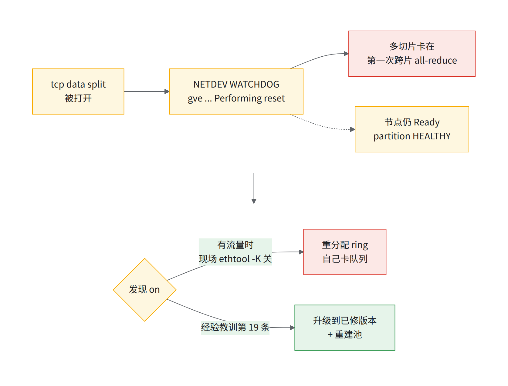

04 功能验证阶梯
- 9 级 阶梯 L0–L8：4 芯 → 数千芯
- 芯片 × 2 10+ × 4x8x8 的 JAX device 数（v7x 每芯片 2 个 device）
- 114–136 s 10+ 片全 ACTIVE
- 1–2 h 整套排期（独占窗口）
- 3 次 10+ 片 DCN 基准提交，都没出数
本章变量与脚本（全书唯一变量块 scripts/env.sh）：
source ~/runbook-env.sh && rb_env_check PROJECT REGION ZONE CLUSTER # 本章用：NS LOCAL_QUEUE INSPECT_NS TEST_IMAGE STATE_DIR（可选 INSPECT_IMAGE INSPECT_CMD NIC_IMAGE）
cd "$RUNBOOK_DIR/scripts" # 不用相对路径：从哪个目录开终端都一样（RUNBOOK_DIR 在 ~/runbook-env.sh 里填，见 01）
./04-gen-jobset.sh ladder # 打印形状阶梯：每级 pod 数 / chip / 期望 device
| 脚本 | 用在哪 | 改状态？ |
|---|---|---|
| 04-gen-jobset.sh | 4.2–4.8 生成冒烟 JobSet（只打印 YAML） | 否 |
| 04-host-inspect.sh | 4.1 逐台巡检 | 是（巡检 Slice 与 Job） |
| 04-nic-check.sh | 网卡健康：单台 kubectl debug node / 全量只读 DaemonSet |
是（诊断 pod） |
| 04-teardown-check.sh | 4.9 查残留 / 重叠 | 否 |
| 04-bench.sh + 04-bench/ | 4.10 组件验收：生成 → 跑 → 收 → 按阈值判 | run / configmap / cleanup 是；gen / judge / timeline / gcsfuse 否 |
前置条件：rb-inspect 在 Kueue 排除列表、$LOCAL_QUEUE 指向 Active 的 CQ；kubectl、jq；$NS、$INSPECT_NS 的 Job/JobSet/Pod 与 cluster 级 slices.accelerator.gke.io 建权限；节点能出网 pip 装 JAX（Cloud NAT，经验教训第 16 条），或换预装镜像的 TEST_IMAGE。
建议验收项
每行跑一次填「结果」；全 PASS（或 WARN 写明原因）= 本章完成。下表是建议的验收项和判据，按你们的需要增删。

读图：紫框是顺带跑的组件基准；每两级之间做一次拆除核对（下表最后的 T 行）。
- WARN（两线之间或仅离群样本超标）可接受，备注原因与同时在跑的任务；低于 WARN 线或不通 = FAIL。单次 FAIL 先重跑，同批 cube 仍 FAIL 才算（例：C3 的 8x8x16 塌陷）；被抢占的一轮不算（优先级）。
- 阈值 = 实测基线减余量，全部 [推断]，来历见 4.10 各卡。基线：实测集群，jax 0.11.2 / libtpu 0.0.49（DCN 0.11.0 / 0.0.48）。
- 冻结：换 libtpu 或使用方第一轮后改
04-bench/thresholds.csv与自建的 DCN 阈值表（4.8 第 3 步）；交付前把其 git commit 记进交付记录，之后收紧只用于回归（09 时间线 T+14）。 - 算力用默认档测（不写
--xla_tpu_dvfs_p_state），P7 高频档只作 A/B 对照（单 device bf16 默认 868、P7 995 TFLOP/s）。
| # | 项 | PASS | WARN | 耗时 | 详见 |
|---|---|---|---|---|---|
| L0 | 预检：03 出口、残留、手工 Slice 清点、网卡 | 04-teardown-check.sh 退出码 0；每台 tcp-data-split=off、gve_reset=0（未登记即 FAIL） |
— | ~10 min | 网卡、4.9 |
| L1 | 主机巡检（每台一个 2x2x1） | 100% 主机 devices=8 OK、每 cube 16/16；raw DMA H2D ≥ 219、D2H ≥ 218 GB/s（注 1） |
212–219 / 211–218 | 未测：先跑 1 池记耗时（注 3） | 4.1、C5 |
| L2 | 2x2x1 单机切片 | ACTIVE ≤ 60 s、DEVICE_CHECK OK 8 8、删除 ≤ 60 s |
ACTIVE ≤ 300 s | ~3 min | 4.2 |
| L3 | 4x4x4（1 cube）+ C1 + C3 | device 128；C3 全片 / 单轴过线；C1 PASS | C3 WARN | ~6 min | 4.3、C3 |
| L4 | 4x4x8（2 cube）+ C3 | device 256；C3 全片过线 | C3 WARN | ~5 min | 4.4 |
| L5 | 4x8x8（4 cube）+ C3 | device 512；C3 全片过线 | C3 WARN | ~5 min | 4.5 |
| L6 | 8x8x8（8 cube）+ C3 | device 1,024；C3 全片过线 | C3 WARN | ~5 min | 4.6 |
| L7 | 8x16x16（32 cube）+ C1 + C3 | device 4,096；C3 单轴过线；全片只记录（无基线） | C3 单轴 WARN | ~8 min | 4.7 |
| L8 | N × 4x8x8 多片（2 → 4 → N） | 10+ 片 device 数对得上；C4 各档 PASS（8 / 10+ 片首跑只记录，注 2） | C4 只有离群项 WARN | ~30 min | 4.8 |
| T | 每级拆除 | 完成后 ≤ 60 s Slice 全删、04-teardown-check.sh = 0 |
过渡态 1–15 min | 每级 1 min | 4.9 |
| # | 项 | 判据 | 耗时 | 详见 |
|---|---|---|---|---|
| C1 | 每芯片 matmul（默认档） | 最慢那台 host 的 bf16 / fp8 TFLOP/s/芯片；host 间 max/min | 2–3 min | C1 |
| C2 | HBM 带宽（4 GiB/device，8 device 并发） | TB/s/芯片 | 含在 C1 | C2 |
| C3 | 片内 ICI all-reduce 1 GiB | 单轴 x/y/z（实测单轴 84–88）；全片按形状 | 2 min/片 | C3 |
| C4 | 跨片 DCN all-reduce（28 个梯度合并并发） | 按片数分档的中位 ms；合并收益 ≥ 2.3×（注 2） | 5–12 min/档 | C4 |
| C5 | host → device（两个口径） | JAX device_put 分片 GB/s/host；raw DMA 见 L1 |
含在 C1 | C5 |
| C6 | gcsfuse 读（10 GB 文件） | 每 host 32 路、单流 GB/s；挂载→首读秒数 | ~5 min | C6 |
| A | 激活延迟（安静 / 繁忙两档都记） | 单片 / 10+ 片 ACTIVE、QuotaReserved 秒数；注明同时在建几片 | 随各级 | A |
- 注 1：raw DMA 仅当拿得到
<H2D 基准镜像>镜像才判，否则用 C5 的 JAXdevice_put口径代替并注明。这个镜像在 Google 自有仓库，使用方拉不到：需 Google 代跑，或提供使用方可拉的镜像。 - 注 2：C4 8 片只有 1 次；10+ 片没有本书自己的基线——首跑只记录，第一轮后再定阈值。
- 注 3：L1 是 100% 主机的硬门槛，但
04-host-inspect.sh整体没在真集群跑过（4.1：只手工复现过 1 台）。所以先plan --pool <池名>再apply --wave 1跑 1 个池，status打印这一波从 apply 起的秒数，记进 4.1，L1 这一行标「部分实测」；全量 144 池 × 16 = 2,304 台的耗时按这个数和分批大小推，排期已留在 09 的「T−10 ～ T−5 天 L1 全量巡检窗口」一行。
1–2 小时跑完整套（排期）
前提：独占窗口、128 个可用 cube、TEST_IMAGE 每 pod 现装 jax（约 40 s；预装镜像每级省 ~1 min）。时间由各轮实测拼出 [推断]。
| 时段 | 做什么 | 能不能并行 | 依据 |
|---|---|---|---|
| 0:00–0:10 | L0；04-bench.sh |
网卡检查与其余并行 | — |
| 0:10–0:40 | L1 分批全量 → cleanup |
不能和多 cube 任务并行 | 单台 Job 46 s；30 min 是占位，以 1 池实测耗时重排（注 3） |
| 0:40–0:45 | L2（Kueue 路径需 7 层 Topology） | — | 实测 |
| 0:45–1:00 | 批 A 同时提交 L3–L6（共 15 cube）+ C6 | 可以；A 列注明「同时在建 4 片」 | 实测同时提交 3 片仍在安静档（26–63 s） |
| 1:00–1:10 | L7 | 可与批 A 尾巴重叠（15 + 32 cube） | 4.7 冒烟 ≤ 160 s + 基准 ~5 min |
| 1:10–1:25 | C4 2 片 → 4 片 | 独占 | 实测 4 片 283–376 s |
| 1:25–1:45 | L8 10+ 片冒烟 → 10+ 片 DCN 基准 | 独占 | 4.8 冒烟 ≤ 230 s；基线基准约 10 min |
| 1:45–1:55 | 网卡复查、04-bench.sh cleanup、拆除 |
— | — |
压到约 1 h 10 min：L1 挪到前一个维护窗口；L7 与批 A 同时提交；10+ 片冒烟用 10+ 片 DCN 基准代替（同样大量 pod，但不打印 DEVICE_CHECK）。不能省：L0、每级拆除核对、C4 的独占窗口。
形状阶梯总表
host = pod = chip ÷ 4；JAX device = chip × 2；cube = chip ÷ 64。参考 act_s（术语）见 §4.2–4.8。
| 级别 | 形状 | cube 数 | host = pod 数 | chip | JAX device | 冒烟实测 |
|---|---|---|---|---|---|---|
| 4.1 / 4.2 | 2x2x1 | 1/16 | 1 | 4 | 8 | 手动 ✓ 8/8；Kueue 按预测被 3 层 Topology 拒 |
| 4.3 | 4x4x4 | 1 | 16 | 64 | 128 | ✓ 128/128，ACTIVE 约 30 s |
| 4.4 | 4x4x8 | 2 | 32 | 128 | 256 | ✓ 256/256，ACTIVE 42–62 s |
| 4.5 | 4x8x8 | 4 | 64 | 256 | 512 | ✗ 手工 Slice 占着 cube，超时 |
| 4.6 | 8x8x8 | 8 | 128 | 512 | 1,024 | Kueue ✗ 同上；手动 ✓ 1024/1024，ACTIVE 57 s |
| 4.7 | 8x16x16 | 32 | 512 | 2,048 | 4,096 | ✓ 4096/4096（加经验教训第 33 条绕法），ACTIVE 46–68 s |
| 4.8 | 10+ × 4x8x8 | 数十 | 片数 × 64 | 数千 | 芯片 × 2 | ✓ device 数对得上（双网卡），全 ACTIVE 114–136 s；DCN 基准没跑成 |
实测列约 20 s 轮询一次：「42–62 s」= 第 42 s 还 ACTIVATING、第 62 s 已 ACTIVE；「≤124 s」= 首次见到 terminalState=Completed。实测的「提交→完成」（150 / 193 / 264 s）含收日志 25–35 s。
💡结论act_s 全在参考范围（单片 40–90 s、与形状关系不大；10+ 片由最慢那片决定，一重试就几百秒，超时门槛 ≥ 5 min）；挡路的是集群上已有的手工 Slice和配额 / 优先级（验收任务的优先级）。
数据 05 §5.1。Kueue 路径 05 §5.2、手动 Slice 05 §5.3、sub-slice 占 cube 05 §5.4、清理顺序 05 §5.5。
通用：怎么看「ACTIVE」
kubectl get slices # 列：NAME TYPE TOPOLOGY STATE AGE
kubectl get workloads -A # ADMITTED=True 才会放 pod
kubectl get slice -l kueue.gke.io/tpu-slice-used-by-namespace=<ns>,kueue.gke.io/tpu-slice-used-by-workload=<wl>
- 每个 replica 一行
default-jobset-<jobset>-<hash>-worker-<i> tpu7x 4x8x8 ACTIVE。 - 控制器日志：
Creating Slice ...→Admission check "<ac>" updated state from "Pending" to "Ready"→ pod 去掉 scheduling gate；结束All Pods in the JobSet have finished→Deleting Slices→Removed finalizer（finalizer）。 - ACTIVE 后成员节点带
cloud.google.com/gke-tpu-slice=<slice名>、cloud.google.com/gke-tpu-topology=<形状>。
⚠️过渡态（ACTIVATING / DEACTIVATING / INCOMPLETE）超过 10–15 min 就是 bug→ 见经验教训第 39 条。
通用：JobSet 骨架（Kueue 路径）
取自一个跑通的 8x16x16 与 JIT 基线作业，只留切片字段：
apiVersion: jobset.x-k8s.io/v1alpha2
kind: JobSet
metadata:
name: <≤20字符> # workload 名字长度限制；多片时更紧：ns + 名字 + worker + 下标位数 ≤ 32（ns=default、10+ 片 → ≤17），04-gen-jobset.sh 会算
labels:
kueue.x-k8s.io/queue-name: multislice-queue
spec:
failurePolicy:
maxRestarts: 0
replicatedJobs:
- name: worker
replicas: <切片数> # Kueue 为每个 replica 建一个 Slice
template:
spec:
backoffLimit: 0
completionMode: Indexed
parallelism: <每片主机数 = 芯片数/4>
completions: <同上>
template:
metadata:
annotations:
cloud.google.com/gke-tpu-slice-topology: <AxBxC>
spec:
restartPolicy: Never
hostNetwork: true
dnsPolicy: ClusterFirstWithHostNet
nodeSelector:
cloud.google.com/gke-tpu-accelerator: tpu7x # 不要自己写 gke-tpu-topology，Kueue 会加
tolerations:
- {key: google.com/tpu, operator: Exists, effect: NoSchedule}
containers:
- name: main
image: <测试镜像，按 digest>
command: [<测试命令>]
resources:
requests: {google.com/tpu: "4"}
limits: {google.com/tpu: "4"}
- webhook 自动加
kueue.x-k8s.io/podset-required-topology、podset-slice-required-topology、podset-slice-size: '16'注解，4x4x4-stateIn [HEALTHY, DEGRADED]亲和、gke-tpu-topologynodeSelector、scheduling gate。 - 测试命令（GA 指南 multislice 示例，镜像
python:3.12）：
pip install -U --pre jax jaxlib libtpu requests -f https://storage.googleapis.com/jax-releases/libtpu_releases.html
python -c 'import jax; print("Total TPU devices:", jax.device_count())'
04-gen-jobset.sh= 骨架 + 这条命令 +「JAX device ≠ 芯片 × 2 就 exit 1」；默认$TEST_IMAGE是实测时按 digest 钉的 python 镜像。- 命令不钉版本（实测时装到 jax / jaxlib 0.11.2、libtpu 0.0.49，实测集群训练钉 0.0.48）；比性能、查版本问题时钉死（见经验教训第 26 条）。
- 多片的
MEGASCALE_COORDINATOR_ADDRESS / NUM_SLICES / SLICE_ID / PORT与TPU_WORKER_HOSTNAMES由平台注入。
通用：每一级怎么跑（4.2–4.8 都照这个）
./04-gen-jobset.sh <形状> [--slices N] [--multi-nic] > $STATE_DIR/04/js.yaml # 看一眼注释行里的「期望 device」
kubectl apply -f $STATE_DIR/04/js.yaml
kubectl get workloads -n $NS -w # ADMITTED 变 True（等 AC Ready）
kubectl get slices -w # 每个 replica 一行，ACTIVE
kubectl logs -n $NS -l jobset.sigs.k8s.io/jobset-name=<name> --prefix --tail=5 | grep DEVICE_CHECK # 每个 pod 一行 OK
kubectl get jobset -n $NS <name> # 最终 Completed
kubectl delete jobset -n $NS <name> # 删 JobSet → Kueue 删 Slice
./04-teardown-check.sh # 4.9：退出码 0 才进下一级
- act_s = 同一 workload 首条
Creating Slice到updated state from "Pending" to "Ready"；只有 leader 干活，没输出就换 pod [推断：grep 词以实际日志为准]：
kubectl logs -n slice-controller-system deploy/slice-controller-controller-manager --since=30m | grep -E "Creating Slice|updated state from \"Pending\" to \"Ready\"" | grep <name>
- 幂等：同名 JobSet 已存在时
apply不重跑 [推断]，先删、等 4.9 干净。 - 失败时
kubectl describe workload -n $NS <wl>看 Admitted 条件和.status.admissionChecks，按下图分诊。

读图：黄框等着会好，红框要动手。三种 message 原文与实测（都在 QuotaReserved=False 里，JobSet 停在 SUSPENDED）：
| message（原文） | 实测 / 怎么办 |
|---|---|
insufficient unused quota ... N more needed |
集群上已有其他大任务占着配额，余额不够本任务的芯数，「N more needed」→ 等、减片数或调配额（03 §3.5） |
topology "super-slice-topology" allows to fit only X out of Y slice(s) |
8x16x16 要 32 个完整 cube，只剩 28 → 等 cube 或换小形状 / 多片 |
couldn't assign flavors to pod set worker: Flavor "<名>" does not contain the requested level |
sub-cube 形状、3 层 Topology → §4.2、经验教训第 32 条 |
- 有手工 Slice（不带
accelerator.gke.io/owner-workload-name注解）先过./05-avoid-manual-slices.py js.yaml js.yaml再 apply；8x16x16 和 10+ × 4x8x8 都靠它一次过。只删 JobSet，别手删 Slice、手摘 finalizer。
验收任务的优先级
📊实测：没写优先级的验收任务被抢占了8×4x8x8 DCN 基准准入约 2 min 后被更高优先级的训练任务抢占（按设计）：
Evicted→Preempted（Preempted to accommodate a workload ... due to prioritization in the ClusterQueue）→Requeued。
| 时段 | 怎么定 |
|---|---|
| 交付前 | 验收即最高优先，不写也不会被抢 |
| 交付后、和生产训练共用 ClusterQueue | 验收给低（./04-gen-jobset.sh ... --priority low，档位见 03-kueue-priority.yaml），被抢写进报告；或错开窗口 |
| 任何时候 | 别给高：10+ 片训练被抢 = 全部重切（见经验教训第 38 条），代价由使用方付 |
给「低」的两个前提：
- 生产 PRIO > 100（
kubectl get workloads -A -o custom-columns=NAME:.metadata.name,PRIO:.spec.priority）：生产不写优先级（kueue.x-k8s.io/priority-class与 podpriorityClassName都不写）按 0 算 [推断：Kueue 默认；实测集群上也是这样]，比low=100 低，验收反而抢占生产；06-jobset.sh默认POD_PRIORITY=high。 - WorkloadPriorityClass 存在（
kubectl get workloadpriorityclass）：指向不存在的 WPC，JobSet 静默永远 suspend（实测集群一个都没有）。--priority会先查；只有 PriorityClass 的集群用--pod-priority <PC>。
本节可能踩到的问题：排队与抢占
4.1主机巡检（每台 host 一个 2x2x1）
一次全量主机巡检的做法（覆盖大部分主机，按 wave 标签分批）：每台 host 一个手动 2x2x1 Slice（partitionIds = 该 host 的 gke-tpu-partition-2x2x1-id）+ 单 pod Job，输出一行 NODE_BENCH_RESULT {json}。
Job nodeSelector：kubernetes.io/hostname、cloud.google.com/gke-tpu-topology: 2x2x1、cloud.google.com/gke-tpu-accelerator: tpu7x、cloud.google.com/gke-accelerator-count: "4"；hostNetwork: true；镜像 <H2D 基准镜像> /scripts/run_node_bench.sh。
巡检 Job 放 $INSPECT_NS（默认 rb-inspect）：03 已把它排除出 Kueue 管理（managedJobsNamespaceSelector）源scripts/03-kueue-values.yaml 文件头，不占配额（slice-controller 的 mjob.kb.io webhook 不看 namespace，照样过）→ 只在维护窗口、队列清空时做。
放受管 ns 不带队列名，本书 manageJobsWithoutQueueName: true 下「will be suspended and never started unless they are assigned a queue and eventually admitted」源https://kueue.sigs.k8s.io/docs/reference/kueue-config.v1beta2/（实测集群是 false，没挂起：抽查的两个作业都 .spec.suspend=false）；带队列名则 TAS 钉不到指定 host [推断]。
做法
./04-host-inspect.sh plan # 列节点 + 2x2x1-id → $STATE_DIR/04/inspect-plan.tsv；报告缺标签的、已在切片里的
./04-host-inspect.sh plan --pool <池名> # 金丝雀：只列 1 个池（16 台）；--limit K 只取 plan 前 K 行，不保证落在同一个池
./04-host-inspect.sh apply --wave 1 --dry-run # 先看这个池生成的 Slice + Job
./04-host-inspect.sh apply --wave 1 # 小批试跑；过了重跑 plan（不带 --pool）再分批放大（--wave 2 ...）
./04-host-inspect.sh status # Slice 状态分布（全 ACTIVE）、Job 完成数、失败的 Job
./04-host-inspect.sh results # 每台一行 INSPECT_RESULT <node> devices=8 OK → $STATE_DIR/04/inspect-results.txt
./04-host-inspect.sh cleanup # 必做：删巡检 Job 和巡检 Slice
-
对象 Slice
insp-<节点后缀>、标签app=rb-inspect, wave=N；默认只测 JAX 见到 8 个 device；测 H2D/D2H 要把INSPECT_IMAGE/INSPECT_CMD换成<H2D 基准镜像>（Google 自有仓库us-docker.pkg.dev/<Google 项目>/...，脚本来自一个现成的 ConfigMap，未采集）。使用方拉不到 Google 自有仓库：需 Google 代跑，或提供可拉镜像 + 脚本。
-
验证：Slice 全 ACTIVE、Job 全 1/1、
results全OK；MISMATCH/NO_RESULT登记复测。 -
实测（1 台）✓，全量未测：脚本没跑（
insp-*不合实测集群命名约束），在一台节点上手工复现INSPECT_RESULT <节点名> devices=8 OK，pip 20 s、device 检查 22 s。 -
1 池耗时：未测，待填。第一次在使用方集群跑
plan --pool <池名>+apply --wave 1后，status末尾打印「wave=1：apply 后 N s，完成 16/16」，把 N 填在这里，L1 改标「部分实测」；全量排期按它推（验收项注 3）。
期望：去掉测法有误的记录后，每台取中位：
| 指标 | 中位 | p1 | 最差 | 主机间变异系数 | 建议判据 [推断] |
|---|---|---|---|---|---|
| H2D 聚合带宽（8 rank × 1 GiB raw DMA） | 223.6 GB/s | 222.65 | 222.23 | 0.16% | 告警 < 219（−2%），不合格 < 212（−5%） |
| D2H 聚合带宽 | 222.4 GB/s | 221.46 | 221.00 | 0.18% | 告警 < 218，不合格 < 211 |
| H2D 与计算重叠（聚合） | 106.6 GB/s | 103.0 | 101.2 | 1.4% | 告警 < 100 |
| 先拷后算 overlap% | 100.7% | 93.6% | 87.7% | — | 告警 < 85% |
| 校验失败 | 0 / 2,093 | — | — | — | 任何一次失败即不合格 |
- 早期测法得到的「最低 124.5 / 127.1 GB/s」是测法问题造成的（62 条；DMA 发起延迟约 3.4 ms，正常约 48 µs），10 台重测约 223（C5）。
- 极其均匀，只能当二值判据：220 台测过多次，首末相关 r = 0.03，按 −5% 离群 0 台；低于告警线复测，仍低提 R&R [推断]。
- 盯覆盖率：实测中有效约 80%，一百多个 cube 里 81 个测全（其余多被训练任务占着）。
⚠️巡检切片会挡住大切片，做完全删否则 GCE 报
has an active sub slice in it with external slice ID <手工切片名>→ 见经验教训第 33 条。

本节可能踩到的问题：节点上百台后静默断网（Cloud NAT 只有 2 个 IP，约 138 个节点以上静默断网） · 主机网卡反复重置 · 作业清单与队列配置写错 · 健康信号各说各话 · 修回的主机又坏 / 标签丢失 · 版本不钉死或 flag 没生效 · 组件版本低于下限 · 一片慢拖全局
4.2单机 2x2x1
- 手动 Slice（实测集群上可用）：
apiVersion: accelerator.gke.io/v1beta1
kind: Slice
metadata:
name: inspect-2x2x1-001
annotations:
slice.gke.io/retry-on-failure: "true"
spec:
type: tpu7x
topology: 2x2x1
partitionIds:
- <partition-id> # 该 host 的 gke-tpu-partition-2x2x1-id
Job 按 4.1 的 nodeSelector 钉到这台 host；清理 kubectl delete slice <name>，不摘 finalizer。最省事是 ./04-host-inspect.sh apply --limit 1，验 kubectl get slice insp-<节点后缀> ACTIVE。
- Kueue 路径：
./04-gen-jobset.sh 2x2x1 | kubectl apply -f -（parallelism: 1），需 03 §3.4 的 7 层 Topology，否则报does not contain the requested level。 - GA 指南的 tpu7x sub-slice 形状 2x2x1、2x2x2、2x2x4、2x4x4，4.2 与 4.3 之间各跑一次。
期望：8 device；act_s ≈22 s（GCE ACTIVATE 不到 1 s + K8s 约 20 s）；240 个 2x2x2 约 2 min 全 ACTIVE。
📊实测
- 手动 ✓（≤25 s）：那台 4x4x4-state UNHEALTHY、
partition-2x2x1-state=HEALTHY，照样建得出。- Kueue ✗（按预测）：≤2 s 拒绝，
Flavor "<池数>xtpu7x-128" does not contain the requested level——实测集群super-slice-topology只有 block / 4x4x4-id / hostname 三层（本书用tpu7x-flavor-v2即$TPU_FLAVOR）。

读图：Job 跑 46 s；删除 23 s 到 NotFound，标签不用手摘。
- 漏写
gke-tpu-accelerator或gke-tpu-topology被 GKE Warden 拒（JobSet 不拦，子 pod 建不出）→ 见经验教训第 31 条。 START_SESSION failed ... Contact GCE with UUID多半是请求拓扑与实际不符，不是硬件。
本节可能踩到的问题：切片模式与形状纪律 · sub-slice 建不起来 · 命名与长度限制
4.3一个 cube：4x4x4（16 pods）
- 生成
./04-gen-jobset.sh 4x4x4（期望 device 128）；验收（L3）./04-bench.sh run 4x4x4 c1c3，冒烟 + C1 / C2 / C3 一次做完。 - 期望 act_s：约 42 s（多轮 45–70 s）；3×4x4x4（冒烟测试）p50 51 s（45–57，n=9）。
📊实测✓
提交到完成约 95 s：Slice 约 30 s ACTIVE → pod 再 ~10 s → pip + device 检查 44 s；
DEVICE_CHECK OK 128 128。多轮基线：安静时 ACTIVE 26–56 s，提交→完成 95–270 s。
本节可能踩到的问题：每个 sub-block 都卡在 8/16 · START_SESSION failed 不等于主机坏
4.42 cube：4x4x8（32 pods）
- 生成
./04-gen-jobset.sh 4x4x8（期望 device 256）；验收（L4）./04-bench.sh run 4x4x8 c3（整片只有 140，别套 4x4x4 的线，C3）。 - 期望 act_s：51 / 81 s（两次运行；81 s 的一次被 2x2x1 挡、重试 3 次）。
partitionIds应恰好 2 个。
📊实测✓
2 s 占到配额 → 22 s
ACTIVATING→ 42–62 s 之间 ACTIVE、同一轮 32 pod 全 Running → ≤124 s Completed；DEVICE_CHECK OK 256 256。
本节可能踩到的问题：默认配额不够
4.54 cube：4x8x8（64 pods）
- 生成
./04-gen-jobset.sh 4x8x8（期望 device 512）；验收（L5）./04-bench.sh run 4x8x8 c3，实测跑通过（提交→完成 233 s）。 - 期望 act_s：46 / 51 s（两次运行）。
⚠️实测✗，原因不在本级
- TAS 选的 4 个 cube 里 1 个被手工 2x2x4 小切片占满，Kueue 看不见 → 见经验教训第 33 条。
- Admitted 始终不 True；Slice 22 s 起
SliceCreationFailed，重试 11 次、650 s 超时：step AttachMIGsToMMIG failed: ... cannot be attached to the parent workload group because it has an active sub slice in it with external slice ID <手工切片名> ...- 加绕法后没单独重跑；同形状在 §4.8 的 10+ 片里通过。
4.68 cube：8x8x8（128 pods）
- 生成
./04-gen-jobset.sh 8x8x8（期望 device 1,024）；验收（L6）./04-bench.sh run 8x8x8 c3。 - 期望 act_s：56 s（DeepSeek-V3 MLPerf）。
📊实测
- Kueue✗：同 §4.5，8 个 cube 里 5 个被手工小切片占，650 s 超时。
- 手动 Slice✓：
05-list-partitions.sh --emit <作业名> 8x8x8选 8 个空闲 cube，建 Slice 后 57 s ACTIVE。headless Service + 普通 Indexed Job（128 pod，nodeSelectorgke-tpu-accelerator+gke-tpu-slice+gke-tpu-topology，手动 Job 的 yaml）：12–24 s 全 Running、58 s 全 Completed，DEVICE_CHECK OK 1024 1024。- Slice 状态读
.status.conditions[type=Ready].reason，不是.status.state（05 §5.1）。
4.732 cube：8x16x16（512 pods，公开文档写明的单片上限）
- 生成
./04-gen-jobset.sh 8x16x16（期望 device 4,096）；验收（L7）./04-bench.sh run 8x16x16 c1c3，512 台 host 各出一行 C1（找慢机）；全片 AR 没基线，首测只记录。 - 期望 act_s：75 s（2,048 chip）。更大单片不在 GKE 公开支持范围内（公开文档上限 32 sub-block，00 §3）。
- 手动路径验证过：多个
8x8x16（各 16 cube）Slice 并发 + 普通 indexed Job，nodeSelectorcloud.google.com/gke-tpu-slice: <切片名>+gke-tpu-topology: 8x8x16。 len(spec.partitionIds) == 芯片数/64，短了是 TAS 缓存或客户端 bug、不是硬件。
📊实测✓（首次提交未准入，见下）
- 未加脚本时：
allows to fit only 28 out of 32 slice(s)——部分 cube 已被其他作业 / 手工小切片占用。- 加
05-avoid-manual-slices.py后：2 s 占到配额 → 23 s ACTIVATING → 46–68 s 之间 ACTIVE → 68 s 时 369 / 512 pod Running，91 s 全 Running → ≤160 s Completed；DEVICE_CHECK OK 4096 4096。512 pod 同时 pip 没被限流。
本节可能踩到的问题：Kueue 只做芯片数加减 · 硬件过了出厂检测仍出问题 · 整 pod 没有单一 ICI 切片 · 切片激活慢或超时（9,216 芯规模下的吞吐）
4.8多片：N × 4x8x8 over DCN + DCN all-reduce 基准
multislice（一个团分乘几列同型号列车）：切片之间只能走 DCN（列车间无线电），切片内部才有 ICI。
-
骨架
replicas: N、parallelism: 64、gke-tpu-slice-topology: 4x8x8；生成./04-gen-jobset.sh 4x8x8 --slices N --multi-nic（先--slices 2）。--multi-nic加实测集群的gke-networking-dra-driver: "true"nodeSelector 和--megascale_grpc_interface_prefixes=eth1,eth2,lo（02 §2.7 第 5 条）。- 10+ 片最好换预装镜像（见经验教训第 27 条）：实测集群大量 pod 同时 pip 没被限流（jaxlib 90 MB + libtpu 222 MB 约 20 s，libtpu 11.8–15.4 MB/s）只说明它 NAT 够，使用方按经验教训第 16 条核。
-
期望 act_s：
场景 act_s 10+ × 4x8x8 正常 112–197 s（p50 166 s，n=9） 有 2x2x1 巡检切片冲突 JIT 基线作业 370 s（7 片重试，单片最多 7 次）；另一任务的第 2 轮 735 s，某个 worker 重试 16 次 两个 10+ 片任务同时建 196–276 s - 首次可能先报
SliceCreationFailed: step AttachMIGsToMMIG failed ...再自愈；external slice ID是手工片名时不会自愈（见经验教训第 33 条）。
📊实测✓上面那条命令 +
05-avoid-manual-slices.py。2 s 占到配额 → 24 / 46 s 全 ACTIVATING → 69 s 3 片 ACTIVE、91 s 7 片、114 s 其余各片 → 114–136 s 之间 10+ 片全 ACTIVE（没看到 SliceCreationFailed）→ ≤230 s Completed；DEVICE_CHECK OK <设备数> <设备数>。⚠️10+ 片 DCN 基准没跑成
- 提交 3 次：1 次配额不足未准入（
N more needed），2 次在基准开始前失败（C4 卡）；改跑 8 片对照时被抢占（优先级）。 - 失败的 2 次是双网卡，都没出
DCN_BENCH_ROW。下一档和更大规模也没出数（06c §6.6 ③）。
- 首次可能先报
-
DCN all-reduce 基准。
-
全互联不是环：10+ 片同下标 device 成组，各切 N 段直发负责的那片、规约完发回；求和在 host CPU 上。
-
基准（基线基准，形状取自一个 MoE 作业的反向，28 组梯度）：每 case 编译 → warmup 5 次 → 屏障 → 计时 20 次，每样本取全部进程墙钟的最大值；两种 mode 只差
--xla_tpu_dcn_all_reduce_combiner_threshold_bytes=0 / 1073741824。 -
基准要自备。本节用的 DCN all-reduce 基准（benchmark.py、run.sh、按片数分的阈值 csv）照这几条自备：
- 测什么：每片同下标的 device 组成一组，对
jax.jit包起来的psum（只跨 DCN 那一维）计时；数据量取训练里真实的梯度 / 激活大小，从小到大扫几档。 - 怎么计时：每档先编译，warmup 5 次，全体屏障后连跑 20 次；每次取所有进程墙钟的最大值（最慢那台决定步时）。
- 怎么判：先在 2 片上跑出基线，再按片数分档自建阈值（PASS / WARN / FAIL），阈值文件和本节表格同口径；首轮只记录、不判红。
- 现成工具：公开的 accelerator-microbenchmarks 带
all_reduce集合通信基准（支持多主机；跨片 DCN 的用法本书未验证），也可以向 Google 要基准数据。
- 测什么：每片同下标的 device 组成一组，对
-
真集群上 2×4x4x4 到 8×4x8x8 都跑过（C4 卡）；本书的脚本在 10+ 片档 3 次提交都没出数，这一档没有本书自己的基线：首跑只记录，第一轮后双方签字定线。被抢占时 Kueue 立刻重排、占回 cube 重建 Slice——被抢就删，别挡生产。
ℹ️训练级第二把尺子：1 vs 2 × 4x4x4 小号 MoE 模型弱扩展
- 实测基线（小号模型）：2 片步时比 1 片慢 15–25%，弱扩展 79–86%，噪声不到 3%。
基线与验收阈值（10+ × 4x8x8；去掉第 1 个样本后的中位数；基线首轮在你的集群上实测（都会高于 8 片档），验收以它为准：首轮实测出基线，再乘下面的系数定线。首轮就不达合并收益门槛（≥ 2.3×）或单 / 双网卡差异明显时，先查网卡和抢占再定基线）：
-
| case | 每 device 数据量 | PASS ≤ | WARN ≤ |
|---|---|---|---|
| 6 KiB × 1（「地板」） | 6 KiB | 基线 × 1.15 | 基线 × 1.4 |
| 15 MiB × 1 | 15 MiB | 基线 × 1.15 | 基线 × 1.4 |
| 64 MiB × 1 | 64 MiB | 基线 × 1.15 | 基线 × 1.4 |
| 28 个梯度，并发 | 31.25 MiB | 基线 × 1.15 | 基线 × 1.4 |
| 28 个梯度，串行 | 31.25 MiB | 只判合并：基线 × 1.15 | 基线 × 1.4 |
大包 p90 ÷ 中位 ≤ 1.25，小包超 2× 中位的样本 ≤ 1 个。换 libtpu 版本要重测：nightly 的 64 MiB 合并比 0.0.48 高约两成，会落进 WARN。
怎么读这些数：
| 读法 | 依据 |
|---|---|
| 合并只帮「很多独立小梯度」 | 串行依赖、单个 AR 都不变 |
| 独立 launch 有地板 | 存在一个不随消息变小而下降的地板；但同一程序里串行 28 个远小于 28 × 地板 |
| 第 1 个样本不算 | 屏障后首跑小包慢 3–34 倍，不去掉会把 p99 抬高（去掉后大包 456 个样本 0 个超 2× 中位）；20 个样本的 p99 即最大值，别当 SLO |
| 名义量 ÷ 时间算出的 GB/s 不是带宽 | 不合并时 bf16 张量带 2 倍 tile padding 上网（64MiB_x1 实际搬 128 MiB）；按实际字节算，大包每 host 出向也远低于 2 × 200G 线速 [推断] |
| 切片数比芯片数更决定延迟 | 同 16 台 host：2 × 32 chips 25.9 ms，16 × 4 chips 58.7 ms |
| 已知异常 | 不合并时 160 KiB 并发明显高于其他小包；nightly 合并 64 MiB 高约两成（设备侧不慢，慢在 host） |
独占窗口跑；报数记同池在跑的多片作业、libtpu 版本、网卡模式。
- 训练的合并 flag（
--xla_tpu_dcn_all_reduce_combiner_threshold_bytes=1073741824）与 host reduction 两个 flag（必须一起开，经验教训第 20 条）见 06c §6.4.1；基线基准 flagfile 里 host reduction 默认开。 - 1/2/4/8 片单 / 双网卡各跑一遍（资料互相矛盾）：实测集群 5 片 1.5 KiB 扫描单网卡快约 1 ms（2.2–2.4 vs 3.2–3.6 ms），训练看不出差别；本书实测 ≤ 4 片无差别（C4 表），[推断，未验证] DCN 不是瓶颈或 megascale 不写 prefix 也用上了多网卡，下次同时读
/sys/class/net/eth*/statistics/tx_bytes。 - 异常，原因未查：4×4x8x8「反向梯度不合并 serial」中位 588.6 / 640.4 ms（双 / 单网卡），远高于其他各档。
节点 / 网卡健康（与 4.1 同一窗口做）

读图（实测集群快照）：节点池只要 VM 还在就不报 ERROR，只看池会把右下 2 个 cube 当成好的。节点标签（gke-tpu-partition-4x4x4-state）只有 HEALTHY / UNHEALTHY，没有 DEGRADED。
能拼多 cube 切片的是 132 个 cube（8,448 芯），不是 Kueue 配额按池数算的那个数 [推断]；当天稍后只剩 128 个 HEALTHY（08 §8.1 实测）。
为什么 4.8 前后各查一遍 → 见经验教训第 19 条：

读图：坏节点状态全绿，只能直接查网卡；修只走绿框。
ethtool -g eth0 | grep -i "tcp data split" # 期望 off（GKE 1.35.2-gke.1269001～1.36.0-gke.3712000 节点镜像的 tpu_network_optimizer 会打开，未修的 tpu-device-plugin 重启后又打开，导致 GVE 复位）
dmesg -T | grep -i "gve.*reset" # 期望无输出
节点上没有 SSH（蓝图「no IAP SSH to nodes ... Use kubectl debug node/... instead」），用 kubectl debug node，用完手删 源https://kubernetes.io/docs/tasks/debug/debug-cluster/kubectl-node-debug/：
./04-nic-check.sh node <NODE> # = kubectl debug node/<NODE> -n $INSPECT_NS -it --profile=sysadmin --image=$NIC_IMAGE，进去后跑上面两条
./04-nic-check.sh fleet # 全部 TPU 节点：$INSPECT_NS 里起只读 DaemonSet（hostNetwork + privileged），每 pod 打一行 NIC_CHECK
./04-nic-check.sh collect # 汇总 → $STATE_DIR/04/nic-check.txt，列出 tcp-data-split≠off 或 gve_reset>0 或无输出的节点
./04-nic-check.sh cleanup # 删 DaemonSet 和残留的 node-debugger-* pod
- 已有部署的止血做法是「
ethtool -K eth0 tcp-data-split offvia DaemonSet」；2,304 台全跑、做成交付验收；fleet重跑无副作用，cleanup必做。 $NIC_IMAGE要自带ethtool（默认nicolaka/netshoot[需验证]，上线前换按 digest 钉的使用方镜像）；宿主 ethtool 6.1 在 6.12 内核上不工作。取不到值按不合格报。- 怎么验：
./04-nic-check.sh node <任一台>进去跑ethtool --version（要比 6.1 新；实测中是 7.0）和ethtool -g eth0，能看到TCP data split一行就算镜像可用。netshoot 在 Docker Hub 上公开，使用方集群能不能拉外网要先问使用方 SRE。
- 怎么验：
- 实测（ethtool 7.0）：tcp-data-split 在
-g不在-k（写作TCP data split: off），脚本已按-g判。按此推断，要改这个设置该用ethtool -G，不是-K[推断]。
⛔发现 on 的节点不要现场
ethtool -K关按经验教训第 19 条升级 + 重建池（上图下行）。
本节可能踩到的问题：切片激活慢或超时 · Kueue 只做芯片数加减 · DCN 弱扩展差 · 版本不钉死或 flag 没生效 · 硬件过了出厂检测仍出问题 · 整 pod 没有单一 ICI 切片 · 训练挂住不报错 · 排队与抢占
4.9每级之后：拆除干净
- 任务结束同一秒 Slice 开始删；JIT 基线作业 DEACTIVATING → INCOMPLETE → 删除约 30 s。
- 检查无残留、无重叠：
kubectl get slices # 期望：只剩你有意保留的
kubectl get slices -A -o custom-columns=NAME:.metadata.name,PARTITIONS:.spec.partitionIds # 任何 partition id 出现两次 = 事故 → 经验教训第 39 条
kubectl get nodes -l cloud.google.com/gke-tpu-slice -L cloud.google.com/gke-tpu-slice # [需验证] 期望列出的切片名都还在 kubectl get slices 里（无节点挂着已删切片的标签）
这三条加过渡态 Slice、残留 Workload、巡检对象做成了脚本，退出码 0 = 干净：
./04-teardown-check.sh # 有意保留的切片用 --keep '<正则>' 排除
./04-teardown-check.sh --keep '^(default-jobset-|jobset-)?(<你的作业名前缀>)' # 共享集群：正则要同时匹配 Slice 名和 Workload 名（jobset-<名>-<hash>）
实测：干净时打印 OK：无悬挂标签；Workload 只算没结束的。节点标签只报告不判失败，别手工摘 [推断]：2x2x1 删完 23 s 时已自动摘，多 cube 片没测；GA 指南只在整体关闭 dynamic slicing 时要求手摘（kubectl label nodes --all cloud.google.com/gke-tpu-slice- cloud.google.com/gke-tpu-slice-topology-）。
⚠️残留 Slice 会伪装成缺货它悄悄吃容量、看着像 GCE_STOCKOUT。清理顺序见 05 §5.5。
本节可能踩到的问题：删除卡住 · 泄漏与孤儿对象静默吃容量
4.10组件验收卡（C1–C6、A）
阶梯证明建得出、跑得通，这里量跑多快。脚本在 scripts/04-bench/（实测集群上跑过）：
source ~/runbook-env.sh && cd "$RUNBOOK_DIR/scripts" && rb_env_check NS LOCAL_QUEUE TEST_IMAGE STATE_DIR
./04-bench.sh configmap # 一次：bench 脚本 → ConfigMap rb-bench
./04-bench.sh run <形状> <c1|c3|c1c3> [--p7] [--hlo] [--name N] [04-gen-jobset.sh 其余参数]
# 卡片 C2（HBM）含在 c1 里。脚本还有 ici1d 模式（一维 ICI 对照；c2 不是有效模式名），验收不用
# = 04-gen-jobset.sh 原样生成（先过 DEVICE_CHECK）→ 有手工 Slice 就过 05-avoid-manual-slices.py → apply
# → 等 terminalState（被抢占立即停）→ 收全部 pod 日志和 Workload/Slice 快照 → 删 JobSet
# → 打印 A 时间线 → bench_judge.py 按 thresholds.csv 判；FAIL 或没 Completed 时退出码 1
# 结果目录 $STATE_DIR/04/bench/<名>/：js.yaml run.log timeline.tsv judge.txt pod-*.log
./04-bench.sh judge <结果目录> # 事后重判（改了阈值之后）
C1 每芯片算力（matmul）
- 命令：L3 / L7 顺带；功耗档 A/B（可选）
./04-bench.sh run 4x4x4 c1 --p7 --name bc1-444p7。 - 测法（
c1_chip_bench.py）：每 host 本地 8 个 device 互不通信，fori_loop连乘 10 次x @ b，5 次取中位，÷ 4 得每芯片。 - 阈值（判最慢那台 host；默认档；jax 0.11.2 / libtpu 0.0.49）：
| 指标（TFLOP/s/芯片） | 实测 min–max（64 台） | 中位 | 占官方峰值 | 占默认档天花板 [推断] | PASS ≥ | WARN ≥ |
|---|---|---|---|---|---|---|
| bf16 N=16384 | 1,713–1,730 | 1,724 | 74.7% of 2,307 | 86.4% of 1,996 | 1,650 | 1,550 |
| bf16 N=32768 | 1,802–1,816 | 1,808 | 78.4% | 90.6% | 1,730 | 1,620 |
| fp8 N=16384 | 3,262–3,306 | 3,282 | 71.1% of 4,614 | 82.2% of 3,991 | 3,150 | 2,950 |
| host 间 max/min（bf16 N=32768） | — | 1.008 | — | — | ≤ 1.03 | ≤ 1.05 |
| P7：bf16 N=32768 | 1,808–1,939 | 1,873 | 81.2% | = 官方峰值 | 1,730 | 1,620 |
| P7：fp8 N=16384 | 两片中位 3,706–3,716 | 3,714 | 80.5% | = 官方峰值 | 3,500 | 3,300 |
数据表与出处（8 行）
| 精度 | N | 默认档 TFLOP/s/芯片 | P7 TFLOP/s/芯片 | P7 提升（分档） |
|---|---|---|---|---|
| bf16 | 4,096 | 1,195 | 1,295.2 | +8% |
| bf16 | 8,192 | 1,459.6 | 1,629.2 | +10% |
| bf16 | 16,384 | 1,722.5 | 1,830.3 | +6% |
| bf16 | 32,768 | 1,808.7 | 1,873.3 | +4% |
| fp8 | 4,096 | 2,131.3 | 2,301.3 | +8% |
| fp8 | 8,192 | 3,170.8 | 3,560.8 | +10% |
| fp8 | 16,384 | 3,282.5 | 3,713.1 | +15% |
| fp8 | 32,768 | 3,123.6 | 3,544.3 | +15% |
出处：本书实测（4x8x8，64 host；默认档与 P7 各测两次取平均）；runbook/04 §4.10 C1（两个峰值口径；默认档天花板 = 官方 × 0.455/0.526 [推断]）。单独打开 SVG
4x4x4（16 host）结果与 4x8x8 相差 < 1%，见同一文件；HBM 带宽 P7 与默认档无差（不到 1%）。提升按 ≥10% 取 5 的倍数、3–10% 取整写。
- 两个峰值口径都报（「1,808 = 官方峰值 78%、默认档天花板 91%」）：官方 2,307 / 4,614 TFLOP/s/芯片（BF16 / FP8，https://cloud.google.com/tpu/docs/tpu7x）是 P7 频率的数；默认档天花板 = 官方 × 0.455/0.526 ≈ 1,996 / 3,991 [推断] 源源：p_state=3 = DVFS 关；单 device 实测 +14.7% 与 1.156 倍吻合。
- 独立锚点：4 MXU × 65,536 MAC × 2 FLOP × 1.9 GHz ≈ 996 /device（× 2 ≈ 1,992 /芯片 ≈ 1,996）；2.2 GHz（P7）下 = 1,153 /device = 官方峰值 [推断：按 JAX 源码算]。
- 不判：P7 下 host 间极差 5.6–6.8%，算法是（最高 − 最低）÷ 中位；改用「最高 ÷ 最低 − 1」是 5.7–7.1%。背景：功耗顶住，每台 host 的快慢固定，两次测量相关 0.999；最慢 host 只快 0.4%。N=4096 只有 46–58%（固定开销）。
- PASS ≈ 实测最低 −4%、WARN ≈ −10% [推断]；出处为两轮实测：64 台默认档，以及 4x4x4 + 4x8x8 上 ABBA 四阶段的功耗档对照。
| 常见失败 | 处理 |
|---|---|
| 某台 bf16 低 > 4% 而 fp8 正常 | 复测，仍低登记 R&R [推断] |
| 全体低 3–7%（单 device 测法下约 13%） | 多半拿 P7 基线卡了默认档（C1 实测 P7 中位 1,873 对默认档 1,808，低 3.5%；13% 是单 device 时钟比 1/1.147） |
libtpu 与基线不同 |
先重建基线（见经验教训第 26 条） |
| 查降频 | 容器读不到功耗 / 频率 / 温度（vfio，tpu_throttle_score 空），看 Cloud Monitoring 或 xprof |
C2 HBM 带宽
- 命令：含在 C1（
hbm行），跑04-bench.sh run <形状> c1或c1c3就有。别跑ici1d：那是一维 ICI 对照；c2这个名字不接受（直接报错，免得和本卡混淆）。 - 测法：
y = x*c + 1，字节 = 2 × 数组；8 device 并发时排成(8, n/1024, 1024)（(8, n)的每片(1, n)会被 tile 补成 8 行，带宽只剩官方的三成左右）。 - 阈值：4 GiB/device 并发 ≥ 5.0 TB/s/芯片 PASS，4.7–5.0 WARN；实测 5.12–5.50，中位 5.38 = 官方的 73%；P7 不变（5.37–5.40）。1 GiB 只有 3.85（52%），只记录。出处、耗时、清理同 C1。
C3 片内 ICI 集合通信
- 命令：
./04-bench.sh run <形状> c3，L3–L7 每级一片；加--hlo核对集合通信类型。 - 测法（
c3_ici_axes.py）：按device.coords+core_on_chip排成 (X, Y, Z, C) mesh，测单轴（全部 device 同时在各自轴组里 all-reduce）、组合轴、全片（all_1d）。口径 nccl-tests busbw，AR = S/t × 2(k−1)/k，S = 每 device 1 GiB bf16。
数据表与出处（49 行）
| 形状 | 组 | 批次 | busbw GB/s |
|---|---|---|---|
| 4x4x4 | 整片 all_1d | 第二批 | 369.8 |
| 4x4x4 | 整片 all_1d | 第二批 | 366.27 |
| 4x4x4 | 整片 all_1d | 第一批 | 363.2 |
| 4x4x4 | 整片 all_1d | 第一批 | 361.5 |
| 4x4x4 | 整片 all_1d | 第一批 | 365.4 |
| 4x4x4 | 片上两核 axis_c | 第二批 | 261.81 |
| 4x4x4 | 片上两核 axis_c | 第二批 | 259.33 |
| 4x4x4 | 单轴 x（长 4） | 第二批 | 86.61 |
| 4x4x4 | 单轴 y（长 4） | 第二批 | 86.87 |
| 4x4x4 | 单轴 z（长 4） | 第二批 | 86.4 |
| 4x4x4 | 单轴 x（长 4） | 第二批 | 86.62 |
| 4x4x4 | 单轴 y（长 4） | 第二批 | 86.52 |
| 4x4x4 | 单轴 z（长 4） | 第二批 | 86.44 |
| 4x4x8 | 整片 all_1d | 第二批 | 140.86 |
| 4x4x8 | 整片 all_1d | 第二批 | 139.85 |
| 4x4x8 | 整片 all_1d | 第一批 | 141 |
| 4x4x8 | 整片 all_1d | 第一批 | 140.2 |
| 4x4x8 | 整片 all_1d | 第一批 | 139.5 |
| 4x4x8 | 片上两核 axis_c | 第二批 | 254.35 |
| 4x4x8 | 片上两核 axis_c | 第二批 | 261.96 |
| 4x4x8 | 单轴 x（长 4） | 第二批 | 86.6 |
| 4x4x8 | 单轴 y（长 4） | 第二批 | 86.51 |
| 4x4x8 | 单轴 z（长 8） | 第二批 | 87.41 |
| 4x4x8 | 单轴 x（长 4） | 第二批 | 86.67 |
| 4x4x8 | 单轴 y（长 4） | 第二批 | 86.53 |
| 4x4x8 | 单轴 z（长 8） | 第二批 | 87.51 |
| 4x8x8 | 整片 all_1d | 第二批 | 170.77 |
| 4x8x8 | 整片 all_1d | 第一批 | 170.2 |
| 4x8x8 | 片上两核 axis_c | 第二批 | 217.94 |
| 4x8x8 | 单轴 x（长 4） | 第二批 | 83.63 |
| 4x8x8 | 单轴 y（长 8） | 第二批 | 86.43 |
| 4x8x8 | 单轴 z（长 8） | 第二批 | 87.01 |
| 8x8x8 | 整片 all_1d | 第二批 | 335.3 |
| 8x8x8 | 整片 all_1d | 第二批 | 329.48 |
| 8x8x8 | 整片 all_1d | 第一批 | 349.8 |
| 8x8x8 | 片上两核 axis_c | 第二批 | 223.54 |
| 8x8x8 | 片上两核 axis_c | 第二批 | 209.67 |
| 8x8x8 | 单轴 x（长 8） | 第二批 | 84.96 |
| 8x8x8 | 单轴 y（长 8） | 第二批 | 86.85 |
| 8x8x8 | 单轴 z（长 8） | 第二批 | 84.04 |
| 8x8x8 | 单轴 x（长 8） | 第二批 | 83.82 |
| 8x8x8 | 单轴 y（长 8） | 第二批 | 85.75 |
| 8x8x8 | 单轴 z（长 8） | 第二批 | 84.81 |
| 8x8x16 | 整片 all_1d | 第二批 | 258.42 |
| 8x8x16 | 片上两核 axis_c | 第二批 | 219.73 |
| 8x8x16 | 单轴 x（长 8） | 第二批 | 84.16 |
| 8x8x16 | 单轴 y（长 8） | 第二批 | 84.03 |
| 8x8x16 | 单轴 z（长 16） | 第二批 | 84.2 |
| 8x8x16 | 整片（塌陷的一次） | 第二批 | 19.28 |
出处：本书实测（第一批：整片 all-reduce）；本书实测（第二批：整片与分轴）；runbook/scripts/04-bench/thresholds.csv（C3 PASS 线）。单独打开 SVG
jax 0.11.2 / libtpu 0.0.49；第一批的 reduce-scatter 数据已作废（编译后是 all-reduce），本图只用 all-reduce。
读图：灰点（单轴，轴长 4 / 8 / 16）全在 84–88，是「链路健康」判据。橙点（4x4x8、4x8x8）整片偏低是实现问题：4x4x8 整片 141 比其 4x4 平面组（165）还低，换 mesh 排序也一样（实测 all_nd = all_1d）——各轴不等长时 XLA / libtpu 没用满第三维 [推断：没抓 profile]；按拓扑本应与 4x4x4 同档（带宽受限的 all-reduce 与轴长无关，整 cube 倍数形状三轴都有环绕链路）源Scaling Book https://jax-ml.github.io/scaling-book/sharding/ 的 AllGather 耗时一节与 https://jax-ml.github.io/scaling-book/tpus/ 的 Pod 规模一节; 原书写的是 v4 / v5p。
| 形状 | 全片 1 GiB AR 实测（独立切片数） | PASS ≥ | WARN ≥ | 单轴 x/y/z 实测 |
|---|---|---|---|---|
| 4x4x4 | 362–370（5） | 330 | 290 | 86–87 |
| 4x4x8 | 140–141（5） | 126 | 112 | 87–88 |
| 4x8x8 | 165–171（3 片 4 次） | 150 | 133 | 84–87 |
| 8x8x8 | 329–350（3） | 296 | 263 | 84–87 |
| 8x8x16 | 255–258（1，另 1 次塌陷 19） | 230 | 204 | 84 |
| 8x16x16 | 未测 | 只记录 | — | 判单轴 ≥ 78 |
| 任意形状单轴 x/y/z | — | 78 | 70 | 83.6–87.5 |
- PASS ≈ 实测最低 × 0.9、WARN ≈ × 0.8 [推断]；同形状独立切片之间差 < 6%。
- 不判：reduce-scatter（被 XLA 改写成 1 个 all-reduce，
--hlo可见，RS 数据不采信）；all-gather（两次可差 20%）；片上 c 轴（210–262，随形状变）。 - 出处：两轮实测（整片、分轴各一轮）；阈值文件
thresholds.csv。 - 耗时：实测各片提交→完成 173–270 s（含激活与 pip）。
- 常见失败：某条单轴 < 70 → 同批 cube 重跑，仍低换小形状逐 cube 定位、走经验教训第 9 条单台坏主机流程 [推断]；全部塌到 11–27（实测中 8x8x16 第一次就是这样）→ 重跑，复现就收 libtpu 日志报 Google。
C4 跨片 DCN all-reduce
- 命令：基准工具自备（测什么、怎么计时、怎么判见 4.8 第 3 步）。先 2 片，再 4 片、8 片、10+ 片；单 / 双网卡各跑一遍做对照，跑完删 JobSet。
- 阈值（28 个梯度合并后并发，ms）：
| 片数 × 形状 | 实测中位（次数） | PASS ≤ | WARN ≤ | 不合并 ÷ 合并 | 阈值文件 |
|---|---|---|---|---|---|
| 2 × 4x4x4 | 22.6 / 28.1（2） | 37 | 45 | 2.73 / 3.20× | thresholds-2x4x4x4.csv |
| 4 × 4x4x4 | 33.4 双网卡 / 33.0 单（2） | 44 | 54 | 3.05 / 3.27× | thresholds-4x4x4x4.csv |
| 4 × 4x8x8 | 36.0 双 / 37.4 单（2） | 49 | 60 | 3.07 / 3.03× | thresholds-4x4x8x8.csv |
| 8 × 4x8x8 | 57.0（1） | 75 | 92 | 2.97× | thresholds-8x4x8x8.csv |
| 10+ × 4x8x8 | 比 8 片更高（以你自己集群的基线为准） | 基线 × 1.15 | 基线 × 1.4 | 2.61–2.75× | thresholds-Nx4x8x8.csv |
数据表与出处（24 行）
| 配置 | 网卡 | case | 中位 ms |
|---|---|---|---|
| 2×4x4x4 | 双 | 28 个梯度合并后并发（最像训练反向） | 22.6 |
| 4×4x4x4 | 双 | 28 个梯度合并后并发（最像训练反向） | 33.4 |
| 4×4x4x4 | 单 | 28 个梯度合并后并发（最像训练反向） | 33 |
| 4×4x8x8 | 双 | 28 个梯度合并后并发（最像训练反向） | 36 |
| 4×4x8x8 | 单 | 28 个梯度合并后并发（最像训练反向） | 37.4 |
| 8×4x8x8 | 双 | 28 个梯度合并后并发（最像训练反向） | 57 |
| 2×4x4x4 | 双 | 28 个梯度各自并发 | 72.4 |
| 4×4x4x4 | 双 | 28 个梯度各自并发 | 102 |
| 4×4x4x4 | 单 | 28 个梯度各自并发 | 108.1 |
| 4×4x8x8 | 双 | 28 个梯度各自并发 | 110.6 |
| 4×4x8x8 | 单 | 28 个梯度各自并发 | 113.4 |
| 8×4x8x8 | 双 | 28 个梯度各自并发 | 169 |
| 2×4x4x4 | 双 | 单个 64 MiB | 64.5 |
| 4×4x4x4 | 双 | 单个 64 MiB | 91.7 |
| 4×4x4x4 | 单 | 单个 64 MiB | 95.1 |
| 4×4x8x8 | 双 | 单个 64 MiB | 128.9 |
| 4×4x8x8 | 单 | 单个 64 MiB | 99.9 |
| 8×4x8x8 | 双 | 单个 64 MiB | 123.3 |
| 2×4x4x4 | 双 | 6 KiB 一次（地板） | 4 |
| 4×4x4x4 | 双 | 6 KiB 一次（地板） | 6.6 |
| 4×4x4x4 | 单 | 6 KiB 一次（地板） | 6.5 |
| 4×4x8x8 | 双 | 6 KiB 一次（地板） | 13.2 |
| 4×4x8x8 | 单 | 6 KiB 一次（地板） | 15.1 |
| 8×4x8x8 | 双 | 6 KiB 一次（地板） | 17.2 |
出处：本书实测结果表；本书实测§2。单独打开 SVG
都不是独占窗口；本书各配置各测 1 次。更多片数不画：延迟随片数继续上涨，验收以你自己集群的基线为准（见 04 §4.8 阈值表）。
-
合并收益 ≥ 2.3× 是硬门槛；阈值 = 基线上沿 × 1.3 / 1.6，10+ 片 = 你自己首轮基线 × 1.15 / × 1.4，全部 [推断]。
-
离群项 WARN 可接受：两轮实测的 7 次重判每次都 WARN，全来自小包 p90 或 2× 中位样本 > 1 个（单次 300–950 ms），中位数全 PASS。
-
同是 4x8x8，片数越多越高；4 片 4x4x4 换 4x8x8（host ×4）只涨约 10%——小规模的数不能外推到 10+ 片。
-
10+ 片那行的参考来自同一集群上此前的两次运行；本书脚本在 10+ 片档提交 3 次：1 次配额不足未准入（见 4.8），下表 2 次在基准开始前失败：
次 提交到失败 全 ACTIVE / 全 Running（注 2） 怎么失败的 1 约 8 min 183 s / 200 s ReachedMaxRestarts（worker-1）：GCE 计划主机维护，提交前约 7 分钟维护窗口已开、约 1 分钟发出终止通知（注 1）2 约 13 min 118 s / 134 s 59 个 pod Error：4 片 START_SESSION failed，其余正常；分诊见经验教训第 43 条（排除了 TASconflicting rank）- 注 1：
worker-1-53以 137 退出（dial tcp <节点IP>:10250: i/o timeout）；该节点提交前约 7 分钟进入MaintenanceWindowStarted、约 1 分钟前收到TerminateOnHostMaintenance。不同于经验教训第 38 条的随机掉 host，部分能提前避开：提交前排除维护窗口内的池；维护标签只提前几分钟出现，挡不住没公告的维护。 - 注 2：「全 ACTIVE」= 10+ 片都 ACTIVE，「全 Running」= 全部 pod（每片 64 个）都 Running，按驱动轮询计；对象时间戳给出的是 187 / 205 s（第 1 次）、122 / 139 s（第 2 次）。
- 10+ 片基准一处坏全没（
maxRestarts0）：留重跑时间，或先跑 10+ 片 DEVICE_CHECK 冒烟筛掉坏 cube。
- 注 1：
-
耗时（含激活与 pip）：2 片 4–5 min、4 片 5–6 min、8 片约 8 min、10+ 片十来分钟。
-
清理：
kubectl -n $NS delete jobset <名>→04-teardown-check.sh。 -
常见失败：第一次跨片 all-reduce 就卡住而节点全绿 → 见经验教训第 19 条。
C5 host → device 搬运（两个口径，不能互比）
| 口径 | 工具 | 实测 | PASS | WARN |
|---|---|---|---|---|
| raw DMA（8 rank × 1 GiB） | H2D 基准镜像（需 Google 提供） | 实测与判据见 4.1 期望表 | 同左 | 同左 |
JAX device_put（一次分片放 8 × 1 GiB） |
c1_chip_bench.py（含在 C1） |
H2D 34.5–50.5，中位 42.8 GB/s/host；循环逐个 put 25.4；D2H 2.2–2.4 | H2D ≥ 30 | 20–30 |
- 差 5 倍是口径（JAX 走 Python / PJRT 拷贝路径），不是主机坏；JAX 口径 D2H 只记录 [推断：host 侧单线程拷贝]。
- raw DMA 自检：结果 JSON 里
h2d.issue_med_us_range上限 > 1,000 µs = 测法有误，重测（早期 62 条即此）。
C6 gcsfuse 读吞吐
- 前提：
- Job 放
$INSPECT_NS，不放$NS：它不申请 TPU、不带队列名，在 Kueue 受管的$NS里会永远挂着（06c §6.1 警告框），wait10 分钟后超时。04-bench.sh gcsfuse已默认--ns $INSPECT_NS。 $INSPECT_NS里要有一份指向同一个桶的 PV/PVC（不依赖 06c 先跑），并给该 ns 的defaultKSA 授桶权限（pod 没指定 SA）。命令在下面，未实测 [推断：照 06-data-pv-pvc.yaml 头注释的变体和 01 §1.5 ③ 的授权改 ns]。- 开了 Workload Identity 的池（实测集群只有双网卡池开了，单网卡池报
Workload Identity Federation is not enabled on node）；桶里有 ≥ 10 GB 文件。
- Job 放
- 命令：bash
# 一次性前提（未实测）：$INSPECT_NS 版 PV/PVC + 桶授权 NS=$INSPECT_NS DATA_PV=${DATA_PV}-inspect DATA_PVC=${DATA_PVC}-inspect \ envsubst '$DATA_PV $DATA_PVC $NS $DATA_BUCKET' < 06-data-pv-pvc.yaml | kubectl apply -f - kubectl -n $INSPECT_NS get pvc ${DATA_PVC}-inspect # 期望 Bound PN=$(gcloud projects describe $PROJECT --format='value(projectNumber)') gcloud storage buckets add-iam-policy-binding gs://$DATA_BUCKET --role=roles/storage.objectUser \ --member="principal://iam.googleapis.com/projects/$PN/locations/global/workloadIdentityPools/$PROJECT.svc.id.goog/subject/ns/$INSPECT_NS/sa/default" ./04-bench.sh gcsfuse --pool <池> --hosts 1 --readers 1 --file <文件> --name gcs1r1 | kubectl apply -f - # 默认 --ns $INSPECT_NS --pvc ${DATA_PVC}-inspect ./04-bench.sh gcsfuse --pool <池> --hosts 16 --readers 32 --file <文件> --name gcs16r32 | kubectl apply -f - kubectl -n $INSPECT_NS wait job/gcs1r1 job/gcs16r32 --for=condition=complete --timeout=10m kubectl -n $INSPECT_NS logs -l app=rb-bench --prefix --tail=1 > gcs.log # 两个 Job 的日志合到一个文件 ./04-bench.sh judge gcs.log- 怎么验证这套绕法（未实测，第一次在新集群跑时做）：
kubectl -n $INSPECT_NS get pods -l app=rb-bench应直接 Running，没有SchedulingGated；pod 里能读到文件。挂载报not found or accessible= 授权没生效，查上面那条 binding。验过后去掉「未实测」。 每 pod 独占一台 host（反亲和）、不申请 TPU，挂载同实测集群（implicit-dirs, client-protocol=grpc，无 file cache）。
- 怎么验证这套绕法（未实测，第一次在新集群跑时做）：
- 阈值：每 host 32 路 ≥ 3.0 GB/s PASS（实测 3.76–5.34；16 台合计 56–60），单流 ≥ 0.25（实测 0.31–0.34；16 台合计 4.94），apply → 首读 ≤ 10 s（实测约 4 s）。WARN 2.0–3.0 / 0.15–0.25；挂载失败即 FAIL。阈值 [推断]，出处为实测。
数据表与出处（7 行）
| host | 每 host 线程 | 读流数 | 合计 GB/s | 墙钟 |
|---|---|---|---|---|
| 1 | 1 | 1 | 0.32 | 约 33 s |
| 16 | 1 | 16 | 4.94 | 约 34 s |
| 1 | 8 | 8 | 1.27 | 约 8 s |
| 1 | 32 | 32 | 3.76 | 约 3 s |
| 1 | 64 | 64 | 5.82 | 约 2 s |
| 16 | 32 | 512 | 56 | 约 3 s |
| 16 | 32 | 512 | 60 | 约 3 s |
出处：实测（双网卡节点，默认 KSA，gs://<数据桶> 只读，无 file cache）。单独打开 SVG
64 路那次只有约 2 s，启动开销占比大，数字偏保守；16 台 × 32 路那批节点前面读过，换新节点重跑结果一样。「每读流 0.3 GB/s × 并发数」只在跨 host 时成立：同一台 32 路每线程只剩约 0.12 GB/s。
读图：瓶颈在每台 host 的读法、不在桶；32 路时每线程只剩约 0.12 GB/s；单线程 cp / tar xf 10 GB 约 33 s，32 路约 3 s。
- 清理：
kubectl -n $INSPECT_NS delete job gcs1r1 gcs16r32（ttlSecondsAfterFinished: 3600兜底；04-bench.sh cleanup也会删），kubectl get pods -A -l app=rb-bench为空。没测：file cache / parallel downloads、写吞吐。
A 激活延迟（安静 vs 繁忙）
ℹ️仅供参考给运维的参考基线（告警阈值、排期预期）——取决于集群上同时在建几片，仅供参考；WARN 不阻断验收。
- 命令：每次
04-bench.sh run都写timeline.tsv（各条件相对 apply 的秒数，取lastTransitionTime）；Slice ACTIVE 收尾时被覆盖，按 Admitted − 1 s 估（实测 5 个样本 Admitted 恒在 ACTIVE 后 1–2 s）。 - 安静档 = L3–L7 单独提交的数。繁忙档：10+ 片 DCN 基准提交的同一分钟再提交
./04-bench.sh run 4x4x4 c1 --name a-busy。一次实测时集群上另一个大规模任务同时激活，三个不同大小的片几乎同时 ACTIVE [推断：控制面成批处理，未查源码]。
| 场景 | 实测 | PASS ≤ | WARN ≤ | FAIL |
|---|---|---|---|---|
| QuotaReserved（提交 → 占到配额） | 1–2 s | 5 s | 30 s | 不准入且原因不是配额 / 拓扑（看 message，通用：每一级怎么跑） |
| 单片 ACTIVE，安静 | 26–63 s（8x16x16 46–68 s / 另一个 8x16x16 作业 75 s），各形状 42–81 s（实测集群，81 s 的一次重试过） | 90 s | 300 s | > 600 s |
| 单片 ACTIVE，与更大规模任务同时建 | 161–172 s | 记录 | 300 s | > 600 s |
| 10+ 片全部 ACTIVE | 112–197 s（p50 166，n=9）；4.8 冒烟 114–136 s；后续 10+ 片实测 118 / 142 / 183 s | 240 s | 600 s | > 900 s，或 SliceCreationFailed 且 message 是手工片名（不自愈） |
| ACTIVE → Admitted → pod 起 | 1–2 s → +1 s | 10 s | 60 s | — |
出处：激活延迟实测；05 §5.1 激活延迟散点图。阈值 [推断]；约 6 / 12 min 是手工子切片冲突时的数，验收前确认没有手工 Slice（L0）。
常见坑汇总（组件验收）
| 现象 | 原因 | 怎么办 |
|---|---|---|
judge 报「没有解析到」 |
结果只在 JAX process 0 的 pod 里，不一定是 worker-0-0 | 04-bench.sh collect 收全部 pod |
| 时间线全挤在同一秒 | 轮询 kubectl get pods 没加标签，6,000+ pod 集群一轮 10 s |
驱动已按标签筛；以 lastTransitionTime 为准 |
检查点
做完了（本章出口 = 建议验收项全部填完）
- 4.1 无异常 host、网卡全部
tcp-data-split=off gve_reset=0（或已登记） - 4.2–4.8 每级 ACTIVE、device 数正确；DCN all-reduce 基准 PASS（工具自备，见 4.8 第 3 步；或 WARN 已解释）
- 4.10 算力行写明功耗档与 libtpu 版本；FAIL 项重跑过
- 全清：每级
./04-teardown-check.sh= 0；./04-bench.sh cleanup后kubectl get jobset,job,configmap -A -l app=rb-bench为空；04-host-inspect.sh cleanup、04-nic-check.sh cleanup - 手工 Slice 已清点；有就每级都过
05-avoid-manual-slices.py（见经验教训第 33 条） - 交付后验收：优先级 / 时间窗已和训练方约定，被抢的轮次已重跑
说得出（先自己答，再点开对答案）
一个 4x8x8 切片要多少 pod、JAX 里看到多少 device？
64 pod；512 device为什么巡检切片不能和多 cube 任务同时存在？
2x2x1 占着的 cube 编不进大切片，JIT 基线作业因此多等了约 6 min10+ 片 all-reduce 为什么要合并小张量？
每次跨片 all-reduce 有一个固定地板（不随消息变小而下降）；合并后 28 个梯度约快 2.7 倍多切片卡在第一次跨片 all-reduce、而节点全绿，先查什么？
GVE 网卡复位：tcp-data-split和 dmesg大切片准入了却一直
SliceCreationFailed，message 里 external slice ID 是一个手工切片名，会自愈吗？不会：手工 Slice 占着 cube；删 JobSet，过05-avoid-manual-slices.py重提 → 经验教训第 33 条insufficient unused quota和allows to fit only X out of Y slice(s)有什么区别？前者配额不够；后者配额够、空闲完整 cube 拼不出形状4x8x8 的片内 all-reduce 只有 170 GB/s、4x4x4 有 365，是链路坏了吗？
不是：单轴都 ≈ 85；链路看单轴 ≥ 78，整片按本形状的线报「每芯片 1,808 TFLOP/s」时还要说什么？
功耗档；占官方峰值 78%、默认档天花板约 91%223.6 GB/s 和 43 GB/s 哪个是 host→device 带宽？
都是，口径不同：raw DMA 对 JAXdevice_put任务结束后怎么确认拆干净？
无残留 Slice、partition id 不重复、节点没挂已删切片的标签
交棒：会建切片了；接下来是切片的日常——怎么删、卡住怎么办、坏 cube 怎么隔离 → 05